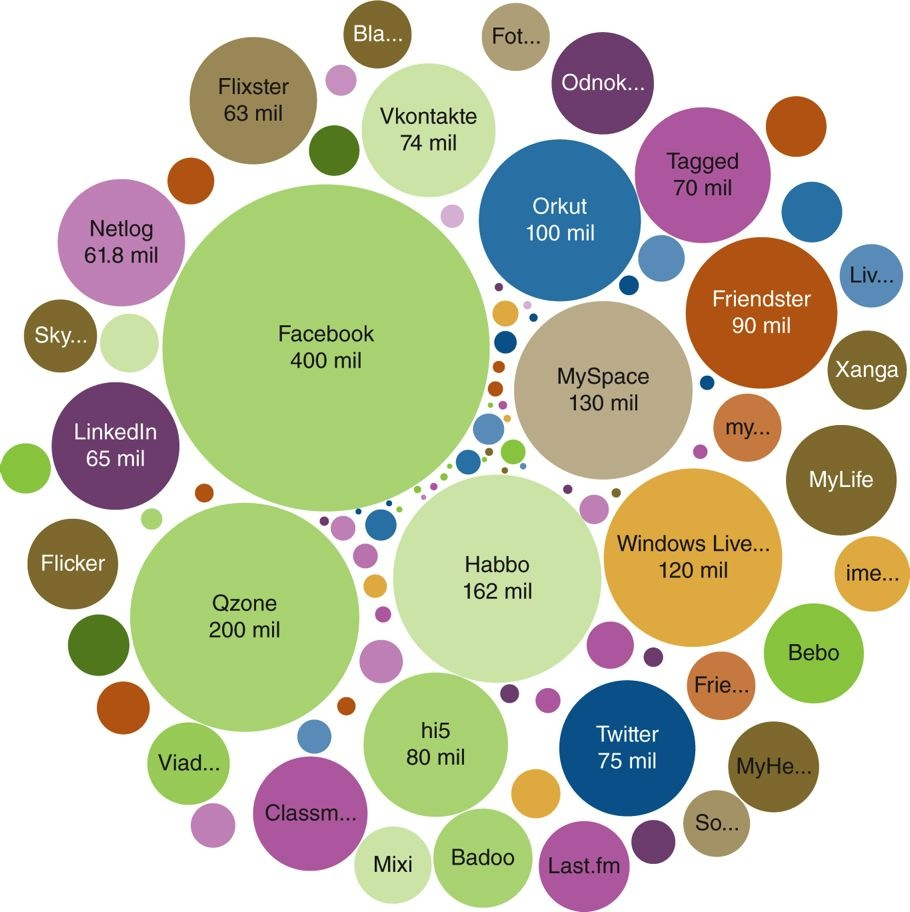

The Amadeus Chamber Symphony is a nonprofit organization operating from St. Johns University in central Minnesota. The Amadeus Chamber Symphony contacted me to redesign their organizations website. They were sick of WordPress templates and wanted something fresh and custom.
The new ACS website uses a modern design when showcasing upcoming performances, orchestra personnel. There is a custom backend CMS with which members of the Board of Directors can post and review minutes and information from monthly meetings. Check it out Here.
This little web app started as a solution to scratch an itch I had at my day job. We have over 700 partners, of which I only knew the location of about 100. This app is digital location directory complete with telephone and map integration. The backend was created with Backbone.js and Underscore.js with a top coat of my own custom styling. Check it out Here.
 Every day, across the globe increasingly more people are logging on to social platforms and blogs. Most of us can empathize with this as we are contributors to the trend. The social media trend is very real and so are the statistics coming in. There are over 1.5 Billion users online worldwide. The Nielsen group reports that three out of four users visit at least one social media outlet while online. That’s over 1 Billion social media users, 1 Billion pairs of eyes and 1 Billion marketing opportunities.
Social media has become a global phenomenon that is causing unpredicted global political change. These statistics indicate an equally significant impact on how marketers’ messages are going to reach their customers’ eyes going forward.
What is Social Media Marketing?
The “formal” definition of social media marketing (SMM) goes something like: “…centers on efforts to create content that attracts attention and encourages user to share it throughout their social network.” What this means is that a corporate message can spread from user to user while gaining an intrinsic sense of trust because the message is in the form of a customer endorsement rather than a commercial. The result is earned media rather than paid media.
What Businesses Use Social Media Marketing?
There are real-world examples of businesses from Fortune 500s to non-profits effectively using social media. Still, not all business are adopting SMM with equal enthusiasm. While the majority of both B2B and B2C business have at least SOME web presence, there is not a consensus of whether or not their efforts are paying off. Over a quarter of respondents in the accompanying graphic provide the bare minimum of content and are unsure if their efforts are baring any fruit. 7% of respondents have seen “measurable” ROI and also have a “liberal” SMM budget. Perhaps the key here to an effective SMM campaign is a campaign that is rich in budget and man-hours.
Developing a Social Media Marketing Strategy:
Good SMM results come from a sound, well-planned strategy, not from a series of random activities. Below is a list of four steps to consider when developing a social media marketing strategy. Try thinking about how you can apply each of these to your business of choice while maintaining a message consistent with other marketing efforts.
There is an old adage in advertising that states, “Marketers must follow they eyeballs.” In other words, allow your audience to tell you where and how to market them by analyzing their habits, choice of media and activities while online. There are distinct levels of audience interaction with the content marketers create: simple consumption, engagement and collaboration to name a few. Above all else, SMM is one of many tools in marketers’ toolbox that can be used to take an established brand message to new audiences.
Working on it...